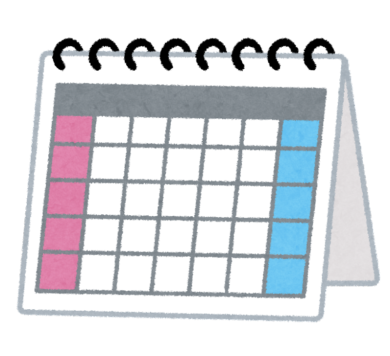
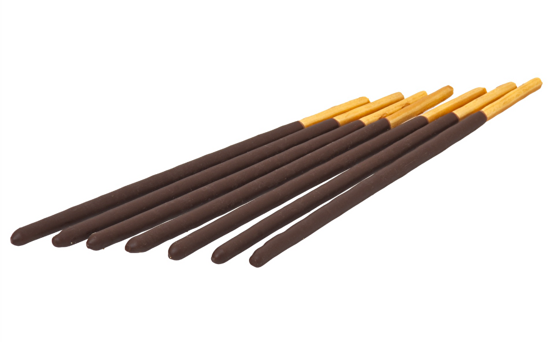

記念日検索サービス
Let's Seach  !
!
検索方法
日付は??月??日の場合、??/??のような形で、半角で入力してください。
また、月や日の日付の数字が一桁の場合、0をつけてください。
例：3月26日→03/26

記念日といえば、祝日です。| 日本 | アメリカ | ||
|---|---|---|---|
| 祝日の名前（国民の祝日に関する法律での位置づけ） | 日付 | 祝日の名前（日本語） | 日付 |
| 元日（年のはじめを祝う） | １月１日 | New Year’s Day（ニューイヤーズ・デイ） | １月１日 |
| 成人の日（おとなになつたことを自覚し、みずから生き抜こうとする青年を祝いはげます） | １月の第２月曜日 | Martin Luther King, Jr. Day （キング牧師誕生日） | １月の第３月曜日 |
| 建国記念の日（建国をしのび、国を愛する心を養う） | ２月11日 | Washington’s Birthday （ワシントン誕生日） | ２月の第３火曜日 |
| 天皇誕生日（天皇の誕生日を祝う） | ２月23日 | Memorial Day （戦没将兵追悼記念日） | ５月最終月曜日 |
| 春分の日（自然をたたえ、生物をいつくしむ） | 春分日 | Independence Day aka Fourth of July （独立記念日） | ７月４日 |
| 昭和の日（激動の日々を経て、復興を遂げた昭和の時代を顧み、国の将来に思いをいたす） | ４月29日 | Labor Day （レイバー・デイ） | ９月の第１月曜日 |
| 憲法記念日（日本国憲法の施行を記念し、国の成長を期する） | ５月３日 | Columbus Day （コロンバス・デイ） | 10月の第２月曜日 |
| みどりの日（自然に親しむとともにその恩恵に感謝し、豊かな心をはぐくむ） | ５月４日 | Veterans Day （復員軍人の日） | 11月11日 |
| こどもの日（こどもの人格を重んじ、こどもの幸福をはかるとともに、母に感謝する） | ５月５日 | Thanksgiving （感謝祭） | 11月第４木曜日 |
| 海の日（海の恩恵に感謝するとともに、海洋国日本の繁栄を願う） | ７月の第３月曜日 | Christmas Day （クリスマス） | 12月25日 |
| 山の日（山に親しむ機会を得て、山の恩恵に感謝する） | ８月11日 | このように、アメリカには10日しか祝日がないのに対し、日本には、16日もあります。また、日本とアメリカでは、祝日がどのような日なのかも違います。他の国の祝日を調べ、文化の違いについて考えてみては、いかがですか。 「世界の祝日」をGoogleで検索する |
|
| 敬老の日（多年にわたり社会につくしてきた老人を敬愛し、長寿を祝う） | ９月の第３月曜日 | ||
| 秋分の日（祖先をうやまい、なくなつた人々をしのぶ） | 秋分日 | ||
| スポーツの日（スポーツを楽しみ、他者を尊重する精神を培うとともに、健康で活力ある社会の実現を願う） | 10月の第２月曜日 | ||
| 文化の日（自由と平和を愛し、文化をすすめる） | 11月３日 | ||
| 勤労感謝の日（勤労をたつとび、生産を祝い、国民たがいに感謝しあう） | 11月23日 | ||
〜の日というのは祝日だけはありません。ここでは、日本の色々な記念日について紹介していきます。

| 記念日の名前 | 日付 | 理由・詳細 |
| 文化財防火デー | １月26日 | 1949年、奈良県斑鳩町の法隆寺金堂から出火し、国宝の十二面壁画の大半が焼損した日。この火災を教訓に1955年、文化財を災害から守ることを目的に、当時の文化財保護委員会（現：文化庁）と国家消防本部（現：消防庁）が制定した。 |
| バカヤローの日 | ２月28日 | 1953年、吉田茂首相（当時）が衆議院予算委員会の席上、西村栄一議員の質問に対し興奮して「バカヤロー」と発言した日。この発言がもとで内閣不信任案が提出・可決され、この年の3月14日に衆議院が解散してしまった。 |
| カラー映画の日 | ３月21日 | 1951年、国産初の総天然色（カラー）映画『カルメン故郷に帰る』が公開された日。 |
| ボーイズビーアンビシャスデー | ４月16日 | 1876年、札幌農学校（現・北海道大学）の初代教頭を務め、「少年よ、大志を抱け！ （Boys, Be Ambitious!）」の言葉で知られるクラーク博士が、アメリカへ帰国した日。 |
| キスの日 | ５月23日 | 1946年、日本で初めてキスシーンが登場する映画とされる、『はたちの青春』が公開された日。 |
| おまわりさんの日 | ６月17日 | 1874年、日本ではじめて巡査制度が開始されたのに合わせて、警察官（おまわりさん）という職業が誕生した日。 |
| クレジットの日 | ７月１日 | 1961年、「 割賦販売法」（後払いで商品を購入したり、サービスの提供を受けたりする「クレジット契約」に関して、ルールを定めた法律）が公布された日。 |
| 献血の日 | ８月21日 | 1964年、日本政府が「輸血用血液を献血により確保する体制を確立」することを閣議決定した日。 |
| 宅配ピザの日 | ９月30日 | 1985年東京・恵比寿に宅配ピザのチェーン店『ドミノ・ピザ』１号店が開店し、日本で初めて「宅配ピザ」というサービスが始まった日。 |
| 時刻表記念日 | 10月５日 | 1894年、庚寅新誌社が日本初の本格的な時刻表『汽車汽船旅行案内』を出版した日。 |
| ポッキー&プリッツの日 | 11月11日 | 大阪市に本社を置く食品メーカーの江崎グリコ株式会社が同社の製品『ポッキー』や『プリッツ』を4つ並べると「1111」に見えることから1999年に制定。 |
| 紙の記念日 | 12月16日 | 実業家の渋沢栄一の提唱で設立された王子製紙の前身である抄紙会社という製紙会社が東京都の王子で開業した日。 |
!日付は??月??日の場合、??/??のような形で、半角で入力してください。
また、月や日の日付の数字が一桁の場合、0をつけてください。
例：3月26日→03/26